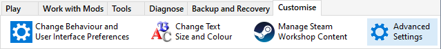

Use the Work with Installers tab to access the most frequently used features to refine your Mod Installer .

You can click the menu items above for more information.
You can use Advanced Settings to perform additional Mod Installer customisation.
|
|
The Installer Tool uses information defined by the Map Extensions, Folders, Files and Excludes pages in Advanced Settings to control the creation of Mod Installers.  You can refine and customise how the Tool constructs Mod Installers by adding, removing or changing the information in these Maps. You can click the Map items in the illustration on the left hand side to view additional information. |
The Installer Tool processes Map information in a specific sequence and, if the criteria are met, the remaining elements in the sequence are ignored. For example, if the Excludes map criteria apply to the item being processed, then the item is ignored and will not be included in the generated Mod Installer.
Use the Installer Wizard Builder